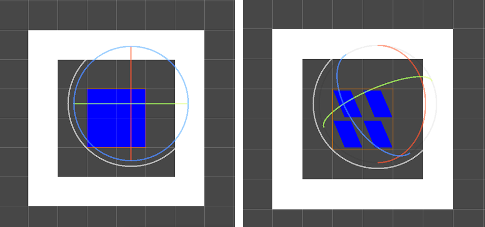
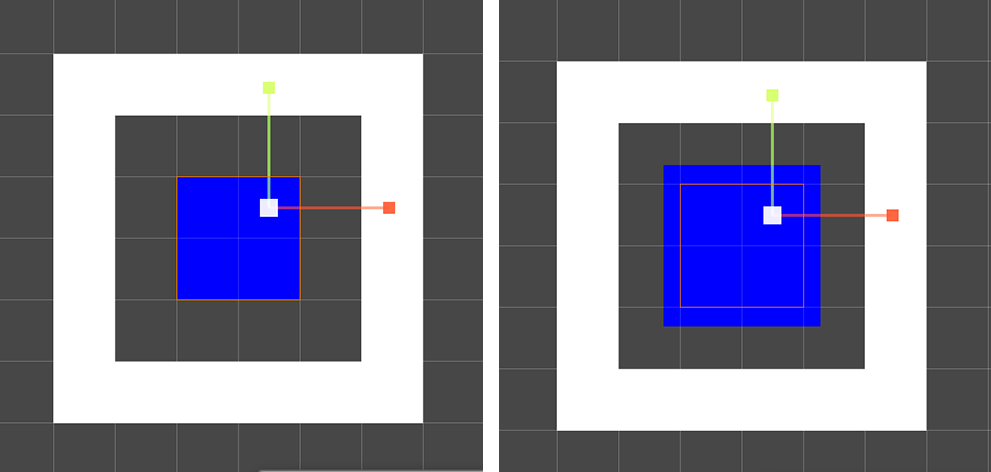
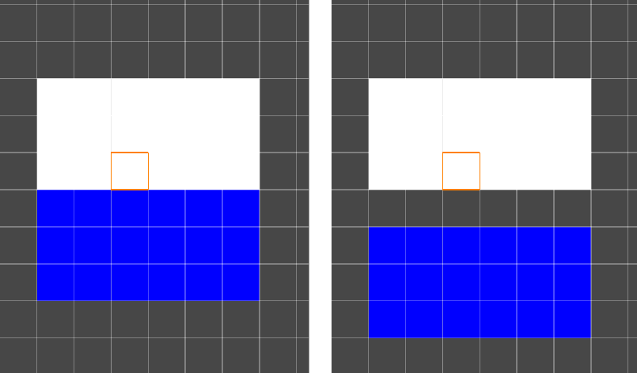
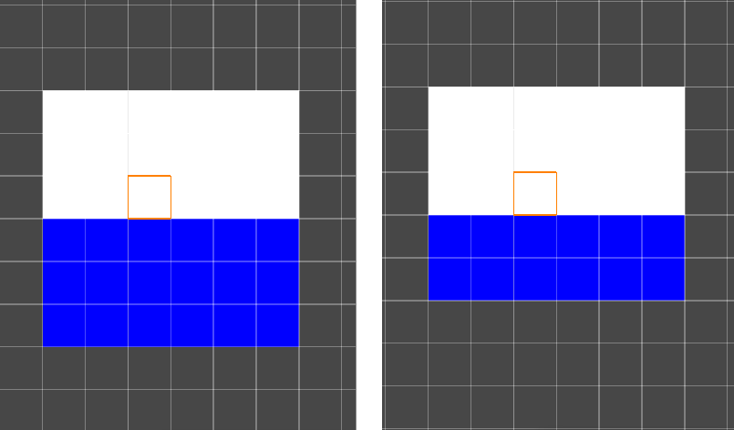

Select Tool
The Select Tool Inspector window has the following two main sections in the Grid Selection and Modify Tilemap property settings.
Grid Selection
Use the Select Tool to select one or more cells. The Grid Selection Inspector window displays the contents and properties of the Tiles at the selected location.
Grid Selection Inspector window properties
Grid Selection Properties
| 属性 | 功能 |
|---|---|
| Tile | Displays the Tile currently set at the selected cell location. If you select multiple cells, and they display the same Tile, then that Tile’s name is shown. If you select multiple cells with different Tiles, this property is blank. |
| Sprite | Displays the Sprite assigned to the Tile in the Tile property above. If you select multiple cells with the same Tile, then this displays the same Sprite. If you select multiple cells with different Tiles, this property is blank. This is grayed out by default, so you cannot edit it. |
| Color | The vertex color of the Sprite. This is grayed out if Lock Color is enabled, so you cannot edit it. |
| Collider Type | The Collider Type of the Tiles at the selected location. This is grayed out by default and cannot be edited. |
| - | Note: The following Transforms (Position, Rotation, Scale) are grayed out if Lock Transform is enabled and cannot be edited. |
| Position | Enter the offset (in cells) for each axis to shift the Tile Sprites along the respective axis. The Tiles’ actual cell positions on the Tilemap remain unchanged. |
| Rotation | This rotates one or more Tile Sprites at the selected location. Enter the rotation (in degrees) for each axis to rotate the Tile Sprites around the respective axis. The Tiles’ actual cell positions on the Tilemap remain unchanged. |
| Scale | Scales the size of one or more Tile Sprites at the selected location. Enter the factor for each axis to scale the Tile Sprite by along the respective axis. The Tiles’ actual cell positions on the Tilemap remain unchanged. |
| Lock Color | Select this to prevent changes to the Color of the Tile, and clear this to enable the Color property. When this property is grayed out, its state remains fixed. See the Tilemaps.TileFlags set in the Tile Asset to modify this property. |
| Lock Transform | Select this to prevent changes to the Transforms of the Tile, and clear this to enable the Transform properties. When this property is grayed out, its state remains fixed. See the Tilemaps.TileFlags set in the Tile Asset to modify this property. |
| Delete Selection | Select this button to delete the currently selected contents in the Tilemap. |
Modify Tilemap
This section contains various functions and tools you can use to modify the Tilemap and selected contents in it. This consists of a toolbar showing the available functions you can use to modify the Tilemap and selected contents in the Tilemaps, and a drop-down menu which provides different options for inserting or removing rows and columns of blank cells into the Tilemap.
The available functions in the Modify Tilemap section.
Gizmo toolbar
Select a function from the toolbar to activate Gizmos which modifies selected contents in the Tilemap. The following table describes each option, with links to examples showing how they affect the Tilemap.
This is the default Tilemap that the Gizmo function examples are based on.
| Gizmo | 功能 |
|---|---|
| None | No Gizmo is active or shown in the Scene view. |
| Move | Activates and displays a Move Gizmo in the Scene view. Use this to change the offset of the selected contents. |
| Rotate | Activates and displays a Rotate Gizmo in the Scene view. Use this to change the rotation of the selected contents. |
| Scale | Activates and displays a Scale Gizmo in the Scene view. Use this to change the scale of the selected contents. |
| Transform | Activates and displays a Transform Gizmo in the Scene view. Use this to change the offset, rotation and scale of the selected contents all at once. |
Gizmo function examples
Default Tilemap and selected cell location. No Gizmo is activated or visible.
Left: Default Tilemap and selected cell location. Right: Offset changed for the selected cell locations.

Left: Default Tilemap and selected cell location. Right: Rotation changed for the selected cell locations.

Left: Default Tilemap and selected cell location. Right: Scale changed for the selected cell locations.
Left: Default Tilemap and selected cell location. Right: Offset, rotation and scale of the selected cell locations are modified.
Modify Tilemap drop-down expanded options

The drop-down menu provides different options for inserting or removing rows and columns of blank cells onto the Tilemap. After selecting one of the drop-down menu options, enter the number of rows or columns to insert or remove into the box and select Modify.
The following table describes each option, with links to examples showing how they affect the Tilemap.

This is the default Tilemap that the following examples are based on.
| 属性 | 功能 |
|---|---|
| Insert Row | Inserts one or more rows of blank cells at the selected location. Existing cells are displaced upward along the positive y-axis. |
| Insert Row Before | Inserts one or more rows of blank cells below the selected location. Existing cells are displaced downward along the negative y-axis. |
| Delete Row | Removes one or more rows of cells at the selected location and above. Existing cells above then collapse down to fill the space left by the deleted rows. |
| Delete Row Before | Removes one or more rows of cells below the selected location. Existing cells below then shift upward along the positive y-axis to fill the space left by the deleted rows. |
| Insert Column | Inserts one or more columns of blank cells at the selected location. Existing cells are displaced to the right along the positive x-axis. |
| Insert Column Before | Inserts one or more columns of blank cells to the left of the selected cell. Existing cells are displaced to the left along the negative x-axis. |
| Delete Column | Removes one or more columns of cells at the selected location and to its right. Existing cells then shift to the left along the negative x-axis to fill the space left by the deleted columns. |
| Delete Column Before | Removes one or more columns of cells to the left of the selected cell. Existing cells shifted to the right along the positive x-axis to fill the space left by the deleted columns. |
Examples of different drop-down menu options
Left: Default Tilemap and selected cell location. Right: Insert Row.

Left: Default Tilemap and selected cell location. Right: Insert Row Before.

Left: Default Tilemap and selected cell location. Right: Delete Row.

Left: Default Tilemap and selected cell location. Right: Delete Row Before.
Left: Default Tilemap and selected cell location. Right: Insert Column.
Left: Default Tilemap and selected cell location. Right: Insert Column Before.
 Left: Default Tilemap and selected cell location. Right: Delete Column.
Left: Default Tilemap and selected cell location. Right: Delete Column.

Left: Default Tilemap and selected cell location. Right: Delete Column Before.
Multiple cell selection
When multiple cells are selected, the lower-leftmost cell is the main point of reference when applying the Modify Tilemap options. See the following examples of selecting multiple cells then modifying the Tilemap.
Left: Default Tilemap with multiple cells selected. Right: Insert Row.
Left: Default Tilemap with multiple cells selected. Right: Insert Column.

Left: Default Tilemap with multiple cells selected. Right: Delete Row.
Left: Default Tilemap with multiple cells selected. Right: Delete Column.
- 2020–08–17
- 2020–01–07
- Updated Select Tool functionality in Unity 2020.1 NewIn20201